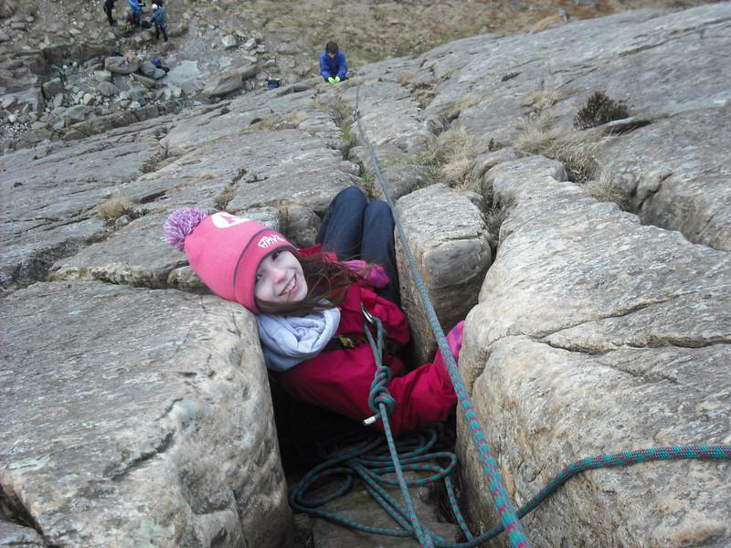
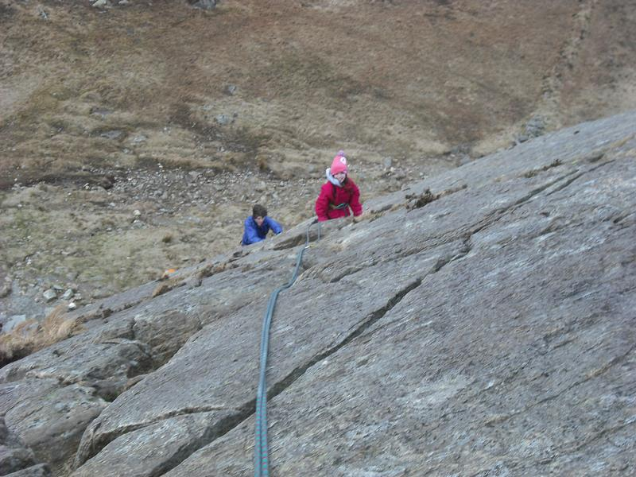

February Climb On Tryfan Bach
It's hard to find things to do in the February school half term week. The weather is usually bad, at least as far as doing anything outside with children is concerned and the hours of daylight are limited. Last year we decided to spend a few days in North Wales and were rewarded with perfect winter weather - clear skies, temperatures well below freezing and plenty of snow. This year we decided to go away for the whole week. We were staying at Hen Ysgubor , which I can highly recommend.
Ella shelters from the wind
{kind=link}
Unlike last year the weather was more mixed. Most days started misty with showers, but generally cleared by lunchtime. I made my annual ascent of M Mawr and for the first time the top was covered in cloud. We spent half a day cycling on a short circular route around Llanberis. In fact we enjoyed the ride so much, we did it twice! We spent a few mornings at the Beacon Climbing Centre , which has a nice relaxed attitude to letting children use the walls.
I had packed a rope, thinking that we might do Sentries Ridge on Mynydd Mawr, but the weather wasn't really good enough. However, I was determined to try and get in at least one route on rock. So one afternoon after going for a bike ride, three of us drove round to Ogwen. The plan was to do a climb on Tryfan Bach, which is only 10 minutes walk from the road, has a selection of easy climbs and an straightforward descent.
Getting close to the top
{kind=link}
When we arrived things didn't look promising. Cloud was boiling down Cwm Tryfan, although Tryfan Bach was just in the clear. It was also very windy, even down by the road. Luckily, even though it was February it didn't feel all that cold. We tramped up to the bottom of the crag, where there were several other parties climbing. I decided to climb the arete at the near end of the crag. All the routes are about the same grade and you can climb anywhere at about VDiff, although many of the routes are easier. However, as it's at the edge of the crag the arete feels pleasantly exposed. I unravelled the rope and we geared up. The crag s about 200ft high and as there were three of us climbing on a single 50 metre rope, doubled, we were in for two and a bit pitches of climbing.
I started up the arete, but as I gained height I became increasingly exposed to the wind blowing up the valley. I teetered over from the arete to a crack a few feet to the right, where the gear was much better. I reached the end of the rope, just as I got to a convenient recess, where I belayed. The second pitch was more interesting, as the wind had increased to the point where it was quite difficult to stay in balance. I reached another recess and brought Ella up. She buried herself in a hole just below me out of the wind, while I brought John up. It wasn't far to the top and soon we were all sheltering behind a rock while I sorted out the gear. Ella was very cold, so I gave her my Paramo Tores gilet to warm her up a bit. When we emerged from our shelter it was hard to stand upright in the wind. However, we soon scrambled over the top and dropped down the other side, where we were more sheltered. The children seemed to have enjoyed themselves, despite the challenging conditions and it didn't take long to get to Pete's Eats for tea.